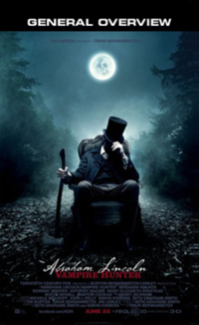

32% 
- STARRING
- Benjamin Walker
- Anthony Mackie
- Rufus Sewell
- Dominic Cooper
- DIRECTOR
- Timur Bekmambetov
- RATING
- R
- THEATRICAL RELEASE
- June 22, 2012
- MOVIE SYNOPSIS
- Abraham Lincoln: Vampire Hunter brings to the screen the secret life of our nation's favorite president...as history's greatest hunter of the undead.
- MPAA RATING
- R, for violence throughout and brief sexuality
- RELEASE COMPANY
- 20th Century Fox
- RUNTIME
- 105 mins
- GENRE
- Action & Adventure, Horror, Mystery & Suspense, Science Fiction & Fantasy
- BOX OFFICE
- $11,245,853
- LINKS
Expect no intelligence or subtlety here, but if you're willing to
put up with the sheer ridiculousness of it all, you might enjoy
wallowing in Bekmambetov's shameless exhibition of narrative lunacy
and technical fireworks in this movie.
Frank SwietekOne Guy's Opinion
The result is a film that feels more like the ridiculous
Will Smith Wild Wild West and less like Bekmambetov's clever Night
Watch.
Beth AccomandoKBPS.org
It stinks!
Jay Sherman (unemployed)
Starting well and culminating in a lackluster second half,
it is far too streamlined and spotty to satisfy as anything more
than a pulpy slice of summer movie inconsequence.
Dustin PutmanDustinPutman.com
No, it's not entertainment; it's garbage.
Arnold Anteatermoviereviewers.com
The feature doesn't have the twinkle in its eye to accurately
blend SuperLincoln with TrueLincoln into a loving, ax-swinging
whole.
Kristian Harloff Schmoes Know
If ever there was an 'either you're in or out' movie in
2012, it's definitely this one and if you're in, it just might be
the most guilty pleasure of the year.
Jeffrey LylesLyle's Movie Files
This movie is even sillier than I thought it would be. You
talk about shark-jumping, fridge-nuking. I have a new one for you,
horse leaping! Once that happens, that's when it goes off the
rails and begins it's descent into Movie Hell.
Mark EllisSchmoes Know
This movie just made Steven Spielberg's life easier because
his Lincoln biopic coming out in December wil definitely be the
better of these two films. This could have been fun, it never
settles in what it wants to be and ultimately fails.
Brian OrndorfBrianOrndorf.com
Somehow, you can't help but feel vampires deserve better.
David KeyesCinemaphile.org